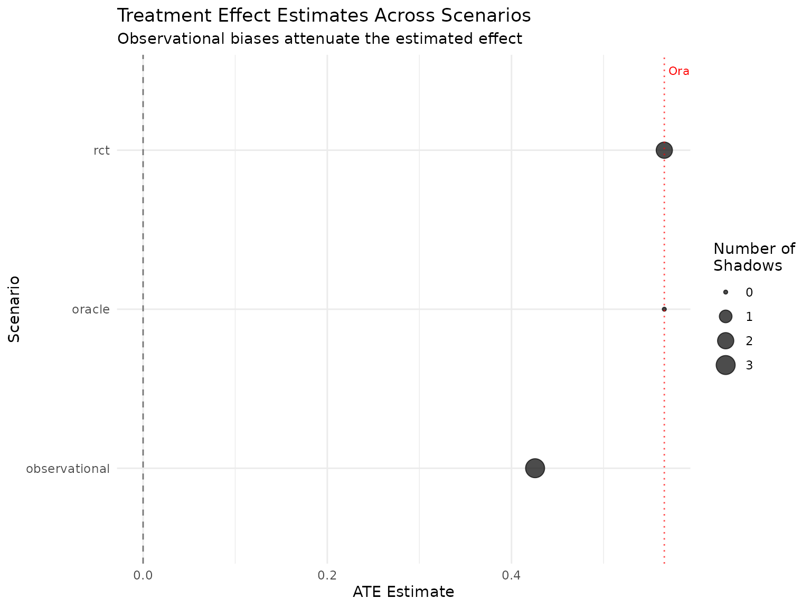

Scenario-Based Sensitivity Analysis
Source:vignettes/scenario-sensitivity.Rmd
scenario-sensitivity.RmdIntroduction
The scenario framework in margot.sim provides a structured approach to sensitivity analysis by bundling observational challenges (shadows) into coherent scenarios that represent different research contexts. This vignette demonstrates how to:
- Create and apply scenarios
- Compare causal estimates across scenarios
- Conduct systematic sensitivity analyses
- Use pre-built scenarios from the library
- Create custom scenarios for specific contexts
Conceptual Framework
What is a Scenario?
A scenario in margot.sim is a named collection of shadows that represents a specific set of assumptions about data quality and observational challenges. Each scenario includes:
- Shadows: The specific measurement errors, missing data patterns, and selection biases
- Description: What the scenario represents
- Justification: Why these assumptions are plausible
- References: Supporting literature
Basic Example: Treatment Effect Under Different Conditions
Let’s estimate a treatment effect under different observational scenarios:
# simulate base data
n <- 1000
sim_data <- margot_simulate(
n = n,
waves = 2,
params = list(
a_y_coef = 0.5, # true treatment effect
b_a_coef = 0.3, # confounding
b_y_coef = 0.4 # confounding
)
)
# define three scenarios
scenarios <- list(
# perfect measurement
oracle = create_scenario(
name = "Oracle",
shadows = list(),
description = "Perfect measurement with no biases"
),
# realistic clinical trial
rct = create_scenario(
name = "Clinical Trial",
shadows = list(
measurement = create_shadow(
type = "measurement_error",
params = list(
variables = c("t1_l", "t2_l"),
error_type = "classical",
sigma = 0.1
)
),
dropout = create_shadow(
type = "censoring",
params = list(
rate = 0.15,
b_scale = 0.1,
a_scale = 0.1,
y_scale = 0.2
)
)
),
description = "Well-conducted RCT with minimal biases"
),
# observational study
observational = create_scenario(
name = "Observational Study",
shadows = list(
treatment_misclass = create_shadow(
type = "measurement_error",
params = list(
variables = "t1_a",
error_type = "misclassification",
sensitivity = 0.85,
specificity = 0.90
)
),
outcome_missing = create_item_missingness_shadow(
variables = "t2_y",
missing_mechanism = "MAR",
missing_rate = 0.25,
dependent_vars = c("b1", "b2")
),
confounder_error = create_shadow(
type = "measurement_error",
params = list(
variables = c("t1_l", "t2_l"),
error_type = "classical",
sigma = 0.3
)
)
),
description = "Observational study with typical limitations"
)
)
# compare scenarios
comparison <- compare_scenarios(
sim_data,
scenarios,
exposure = "t1_a",
outcome = "t2_y"
)
print(comparison)
#> Scenario Comparison Results
#> ===========================
#> Exposure: t1_a
#> Outcome: t2_y
#> Number of scenarios: 3
#>
#> Scenario N_Shadows ATE ATT ATU
#> oracle 0 0.566 0.566 0.566
#> rct 2 0.566 0.566 0.566
#> observational 3 0.426 0.426 0.426
#>
#> Sensitivity Analysis:
#> ATE range: [0.426, 0.566]
#> Bias from oracle:
#> rct: 0 (0%)
#> observational: -0.14 (-24.8%)
#> ATT range: [0.426, 0.566]
#> Bias from oracle:
#> rct: 0 (0%)
#> observational: -0.14 (-24.8%)
#> ATU range: [0.426, 0.566]
#> Bias from oracle:
#> rct: 0 (0%)
#> observational: -0.14 (-24.8%)Visualizing Scenario Comparisons
# plot the comparison
plot(comparison, estimand = "ate") +
theme_minimal() +
labs(
title = "Treatment Effect Estimates Across Scenarios",
subtitle = "Observational biases attenuate the estimated effect"
)
# create a more detailed visualization
comparison_data <- data.frame(
Scenario = comparison$scenario_names,
ATE = sapply(comparison$results, function(x) x$effects$ate),
N_Shadows = sapply(comparison$results, function(x) x$n_shadows)
)
# add true effect for reference
true_ate <- comparison$results$oracle$effects$ate
ggplot(comparison_data, aes(x = reorder(Scenario, ATE), y = ATE)) +
geom_point(aes(size = N_Shadows), color = "steelblue") +
geom_hline(yintercept = true_ate, linetype = "dashed", color = "red") +
geom_segment(aes(xend = Scenario, yend = true_ate),
color = "gray50", alpha = 0.5) +
coord_flip() +
scale_size_continuous(range = c(3, 8)) +
labs(
title = "Bias Under Different Scenarios",
subtitle = "Distance from red line shows bias",
x = "Scenario",
y = "Average Treatment Effect (ATE)",
size = "Number of\nChallenges"
) +
theme_minimal()Using Pre-Built Scenarios
The margot.sim package includes a library of pre-built scenarios representing common research contexts:
# get simple scenario collection
simple_scenarios <- scenario_collection_simple()
# view available scenarios
cat("Available scenarios:\n")
#> Available scenarios:
for (name in names(simple_scenarios)) {
scenario <- simple_scenarios[[name]]
cat(sprintf("- %s: %s (%d shadows)\n",
name,
scenario$description,
scenario$n_shadows))
}
#> - oracle: Perfect measurement with no observational distortions (0 shadows)
#> - rct: Simple RCT with measurement error and dropout (2 shadows)
#> - observational: Observational study with measurement error and missingness (3 shadows)
#> - pessimistic: Worst-case plausible scenario with multiple biases (5 shadows)
# use specific pre-built scenarios
# create simple scenarios
rct_scenario <- scenario_rct_simple()
obs_scenario <- scenario_observational_simple()
# customise pre-built scenarios
high_dropout_rct <- scenario_rct_simple(
measurement_error_sd = 0.05, # very precise measurement
dropout_rate = 0.30, # but high dropout
name = "High Dropout RCT"
)Systematic Sensitivity Analysis
For more rigorous sensitivity analysis, we can vary parameters systematically:
# create a gradient of scenarios from optimistic to pessimistic
create_measurement_scenario <- function(error_level, miss_rate) {
create_scenario(
name = sprintf("Error=%.1f, Missing=%.0f%%", error_level, miss_rate*100),
shadows = list(
measurement = create_shadow(
type = "measurement_error",
params = list(
variables = c("t1_l", "t2_l"),
error_type = "classical",
sigma = error_level
)
),
missing = create_item_missingness_shadow(
variables = "t2_y",
missing_mechanism = "MCAR",
missing_rate = miss_rate
)
)
)
}
# create scenario grid
error_levels <- c(0, 0.1, 0.3, 0.5)
missing_rates <- c(0, 0.1, 0.2, 0.3)
scenario_grid <- expand.grid(
error = error_levels,
missing = missing_rates
)
# create scenarios
grid_scenarios <- lapply(1:nrow(scenario_grid), function(i) {
create_measurement_scenario(
scenario_grid$error[i],
scenario_grid$missing[i]
)
})
names(grid_scenarios) <- paste0("s", 1:length(grid_scenarios))
# run comparison
grid_comparison <- compare_scenarios(
sim_data,
grid_scenarios,
exposure = "t1_a",
outcome = "t2_y"
)
# extract results for heatmap
grid_results <- data.frame(
error = scenario_grid$error,
missing = scenario_grid$missing,
ate = sapply(grid_comparison$results, function(x) x$effects$ate)
)
# calculate bias
grid_results$bias <- grid_results$ate - grid_results$ate[1] # first is oracle
# create heatmap
ggplot(grid_results, aes(x = factor(error), y = factor(missing), fill = bias)) +
geom_tile() +
geom_text(aes(label = sprintf("%.3f", ate)), color = "white") +
scale_fill_gradient2(low = "darkred", mid = "white", high = "darkblue",
midpoint = 0) +
labs(
title = "Treatment Effect Sensitivity Analysis",
subtitle = "Numbers show ATE estimates; color shows bias",
x = "Measurement Error (SD)",
y = "Missing Data Rate",
fill = "Bias"
) +
theme_minimal()Monte Carlo Sensitivity Analysis
For more robust conclusions, we can combine scenarios with Monte Carlo simulation:
# function to generate data
generate_data <- function() {
margot_simulate(
n = 500,
waves = 2,
params = list(
a_y_coef = 0.5,
b_a_coef = 0.3,
b_y_coef = 0.4
)
)
}
# define focused scenarios
mc_scenarios <- list(
oracle = scenario_oracle(),
typical_rct = scenario_rct_simple(),
typical_obs = create_scenario(
name = "Typical Observational",
shadows = list(
create_shadow(
type = "measurement_error",
params = list(
variables = "t1_a",
error_type = "misclassification",
sensitivity = 0.90,
specificity = 0.95
)
)
)
),
pessimistic = scenario_pessimistic()
)
# run sensitivity analysis
mc_results <- sensitivity_analysis(
data_generator = generate_data,
scenarios = mc_scenarios,
intervention = list(t1_a = 1),
outcome_var = "t2_y",
n_sim = 100,
parallel = FALSE
)
#>
#> Processing scenario: oracle (1/4)
#>
#> Processing scenario: typical_rct (2/4)
#>
#> Processing scenario: typical_obs (3/4)
#>
#> Processing scenario: pessimistic (4/4)
# summarize results
mc_summary <- summary(mc_results)
print(mc_summary)
#> Scenario Mean_ATE SD_ATE Min_ATE Max_ATE N_Sims
#> 1 oracle 0.59772152 0.09575473 0.3134443 0.8416981 100
#> 2 typical_rct 0.59502146 0.10183407 0.3646639 0.8345193 100
#> 3 typical_obs 0.49043915 0.10341473 0.2646570 0.7664531 100
#> 4 pessimistic 0.05509655 0.22161657 -0.5571657 0.5988056 100
# visualize distribution of effects
all_ates <- list()
for (scenario_name in names(mc_results$results)) {
ates <- sapply(mc_results$results[[scenario_name]], function(x) x$ate)
all_ates[[scenario_name]] <- data.frame(
Scenario = scenario_name,
ATE = ates
)
}
ate_df <- do.call(rbind, all_ates)
ggplot(ate_df, aes(x = ATE, fill = Scenario)) +
geom_density(alpha = 0.6) +
geom_vline(xintercept = 0.5, linetype = "dashed", color = "red") +
labs(
title = "Distribution of ATE Estimates Across Scenarios",
subtitle = "Red line shows true effect (0.5)",
x = "Average Treatment Effect",
y = "Density"
) +
theme_minimal() +
scale_fill_brewer(palette = "Set2")Creating Custom Scenarios
You can create scenarios tailored to your specific research context:
# example: COVID-19 vaccine effectiveness study
covid_scenario <- create_scenario(
name = "COVID Vaccine Study",
shadows = list(
# vaccination status often misclassified
vaccine_misclass = create_shadow(
type = "measurement_error",
params = list(
variables = "t1_a", # vaccination status
error_type = "misclassification",
sensitivity = 0.95, # some forget second dose
specificity = 0.98 # rare false claims
),
name = "Vaccination misclassification"
),
# outcome ascertainment varies
outcome_error = create_shadow(
type = "measurement_error",
params = list(
variables = "t2_y", # COVID diagnosis
error_type = "differential",
differential_var = "t1_a",
differential_fn = function(modifier_values) {
# vaccinated more likely to test
ifelse(modifier_values == 1,
rnorm(length(modifier_values), 0, 0.1),
rnorm(length(modifier_values), 0, 0.3))
}
),
name = "Differential testing"
),
# loss to follow-up
ltfu = create_shadow(
type = "censoring",
params = list(
rate = 0.20,
b_scale = 0.3, # depends on baseline health
a_scale = -0.2, # vaccinated less likely to drop out
y_scale = 0.5 # sick more likely to stay in study
),
name = "Differential follow-up"
)
),
description = "COVID-19 vaccine effectiveness with real-world biases",
justification = paste(
"Vaccination records imperfect due to multiple doses/sites.",
"Testing behavior differs by vaccination status.",
"Sicker patients more likely to remain under observation."
),
references = c(
"Lipsitch M, et al. N Engl J Med 2021;385:e84",
"Hernan MA, et al. Ann Intern Med 2021;174:1409-1413"
)
)
# apply to data
covid_data <- margot_simulate(
n = 2000,
waves = 2,
params = list(
exposure_type = "binary",
a_y_coef = -1.2, # strong protective effect
b_a_coef = 0.5, # healthier more likely vaccinated
b_y_coef = 0.8 # baseline health affects outcome
)
)
covid_result <- apply_scenario(covid_data, covid_scenario)
# compare with oracle
oracle_effects <- compute_causal_effects(
covid_result$data_true,
exposure = "t1_a",
outcome = "t2_y"
)
biased_effects <- compute_causal_effects(
covid_result$data_observed,
exposure = "t1_a",
outcome = "t2_y"
)
cat("\n=== COVID Vaccine Effectiveness ===\n")
#>
#> === COVID Vaccine Effectiveness ===
cat("True effectiveness:", round(oracle_effects$ate, 3), "\n")
#> True effectiveness: 0.615
cat("Observed effectiveness:", round(biased_effects$ate, 3), "\n")
#> Observed effectiveness: 0.645
cat("Bias:", round(biased_effects$ate - oracle_effects$ate, 3), "\n")
#> Bias: 0.03
cat("Relative bias:",
round((biased_effects$ate - oracle_effects$ate) / oracle_effects$ate * 100, 1),
"%\n")
#> Relative bias: 4.9 %Reporting Scenario Analyses
When reporting results from scenario analyses:
# create a summary table
create_scenario_table <- function(comparison) {
results <- list()
for (i in seq_along(comparison$scenario_names)) {
name <- comparison$scenario_names[i]
scenario <- comparison$scenarios[[i]]
effects <- comparison$results[[name]]$effects
results[[name]] <- data.frame(
Scenario = name,
Description = substr(scenario$description, 1, 50),
N_Shadows = scenario$n_shadows,
ATE = round(effects$ate, 3),
ATT = round(effects$att, 3),
ATU = round(effects$atu, 3)
)
}
do.call(rbind, results)
}
# generate table
scenario_table <- create_scenario_table(comparison)
kable(scenario_table, row.names = FALSE,
caption = "Causal Effect Estimates Under Different Scenarios")| Scenario | Description | N_Shadows | ATE | ATT | ATU |
|---|---|---|---|---|---|
| oracle | Perfect measurement with no biases | 0 | 0.566 | 0.566 | 0.566 |
| rct | Well-conducted RCT with minimal biases | 2 | 0.566 | 0.566 | 0.566 |
| observational | Observational study with typical limitations | 3 | 0.426 | 0.426 | 0.426 |
# create a bias decomposition
oracle_ate <- comparison$results$oracle$effects$ate
bias_decomposition <- data.frame(
Scenario = comparison$scenario_names,
Total_Bias = sapply(comparison$results, function(x) {
x$effects$ate - oracle_ate
})
)
# visualize bias decomposition
ggplot(bias_decomposition, aes(x = reorder(Scenario, Total_Bias),
y = Total_Bias)) +
geom_bar(stat = "identity", fill = "darkred", alpha = 0.7) +
coord_flip() +
labs(
title = "Bias Decomposition by Scenario",
subtitle = "Deviation from oracle estimate",
x = "Scenario",
y = "Bias in ATE"
) +
theme_minimal() +
geom_hline(yintercept = 0, linetype = "solid")Best Practices
1. Start with Extremes
Begin with oracle (best case) and pessimistic (worst case) scenarios to bound your estimates.
2. Focus on Plausible Scenarios
While extreme scenarios are useful, spend most effort on realistic scenarios that reflect your actual data.
3. Document Assumptions
Each scenario should clearly state what assumptions it makes and why they’re reasonable.
Advanced Example: Threshold Analysis
Find the level of bias at which conclusions would change:
# function to find threshold where effect becomes non-significant
find_significance_threshold <- function(data, max_error = 1.0, step = 0.05) {
thresholds <- list()
for (error_sd in seq(0, max_error, by = step)) {
# create scenario with increasing measurement error
scenario <- create_scenario(
name = paste0("Error_", error_sd),
shadows = list(
create_shadow(
type = "measurement_error",
params = list(
variables = "t1_a",
error_type = "classical",
sigma = error_sd
)
)
)
)
# apply and estimate
result <- apply_scenario(data, scenario)
# simple t-test for significance
treated <- result$data_observed$t2_y[result$data_observed$t1_a > median(result$data_observed$t1_a)]
control <- result$data_observed$t2_y[result$data_observed$t1_a <= median(result$data_observed$t1_a)]
if (length(treated) > 1 && length(control) > 1) {
test <- t.test(treated, control)
thresholds[[length(thresholds) + 1]] <- data.frame(
error_sd = error_sd,
estimate = mean(treated) - mean(control),
p_value = test$p.value,
significant = test$p.value < 0.05
)
}
}
do.call(rbind, thresholds)
}
# find threshold
threshold_results <- find_significance_threshold(sim_data)
# plot
ggplot(threshold_results, aes(x = error_sd)) +
geom_line(aes(y = estimate), color = "blue", size = 1) +
geom_point(aes(y = estimate, color = significant), size = 3) +
geom_hline(yintercept = 0, linetype = "dashed") +
scale_color_manual(values = c("FALSE" = "red", "TRUE" = "blue")) +
labs(
title = "Effect Estimate Robustness",
subtitle = "How measurement error affects significance",
x = "Measurement Error (SD)",
y = "Effect Estimate",
color = "Significant\n(p < 0.05)"
) +
theme_minimal()Conclusion
The scenario framework in margot.sim provides a principled approach to sensitivity analysis that:
- Organizes complex sets of assumptions into named, documented scenarios
-
Facilitates systematic comparison across different
data quality assumptions
- Communicates uncertainty through concrete, interpretable scenarios
- Enables both simple comparisons and sophisticated sensitivity analyses
By thinking in terms of scenarios rather than individual biases, researchers can better understand how their conclusions depend on data quality assumptions and communicate this uncertainty to stakeholders.
Further Reading
-
vignette("applying-shadows")- Details on individual shadow types -
vignette("monte-carlo-simple")- Monte Carlo evaluation methods -
vignette("misclassification-bias")- Deep dive into classification errors -
vignette("truncation-coarsening")- Information loss in measurements